Vigilo
Gratis
Para siempre
- Modo IA con 16 agentes en cualquier terminal
- Sin límite, por tiempo o personalizado
- Tapa cerrada, cargador y batería
- Atajos de teclado, Atajos y AppleScript
Vigilo para Mac
Vigilo mantiene tu Mac despierta mientras tus agentes de IA programan en la terminal, y la deja dormir en cuanto terminan.
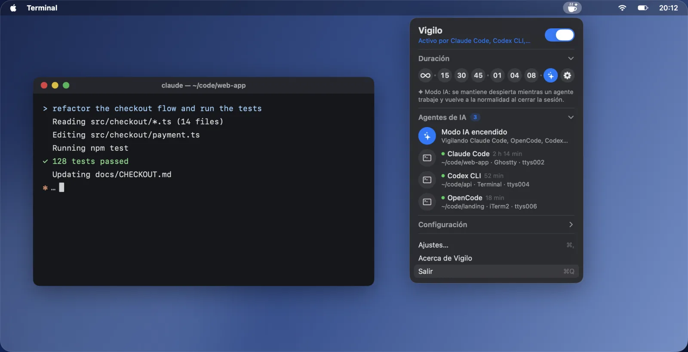
Modo IA
Toca el destello y olvídate. Abre Claude Code, Codex, OpenCode o Gemini en cualquier terminal y Vigilo mantiene tu Mac despierta. Cierra la sesión y todo vuelve a la normalidad.
Todo lo que necesitas
16 agentes de IA
Claude Code, OpenCode, Codex CLI, Gemini CLI, GitHub Copilot CLI, Cursor Agent, Aider y más. Ve cada sesión con su carpeta de proyecto y su terminal, directo en el menú.
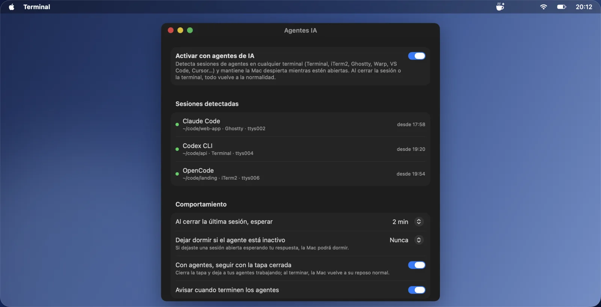
Avisos
Cuando termina el último agente, Vigilo espera un momento por si abres otra sesión, luego deja descansar tu Mac y te avisa.
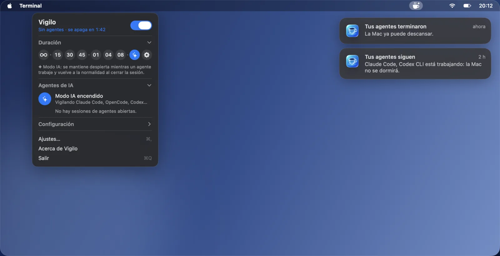
Hecha para tu Mac
Por tiempo
Mantén tu Mac despierta sin límite, 15, 30 o 45 minutos, 1, 4 u 8 horas, o el tiempo que quieras. Todo lo que esperas de una app antisueño, a un clic.
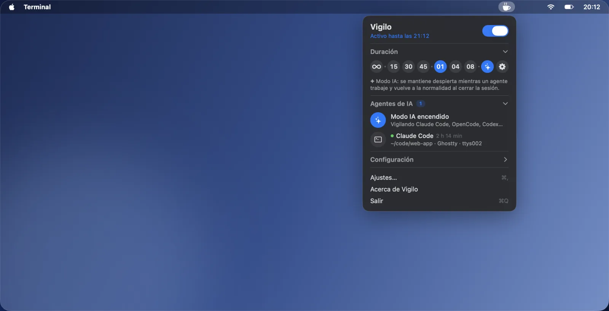
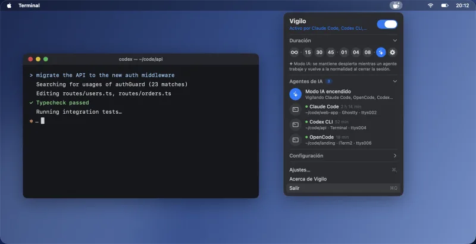
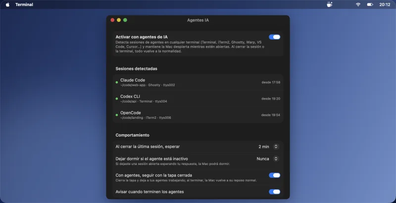
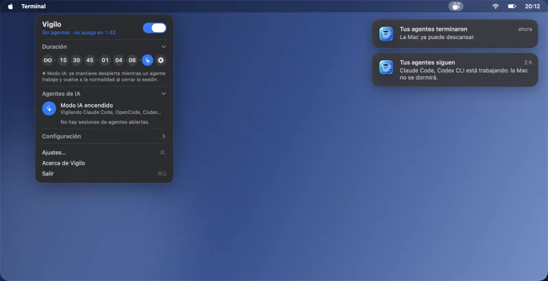
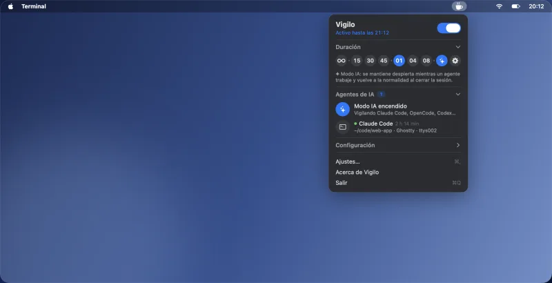
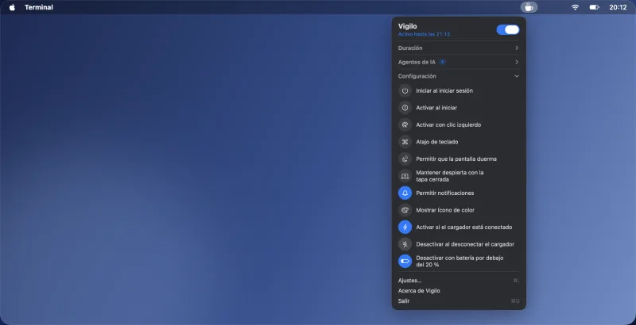
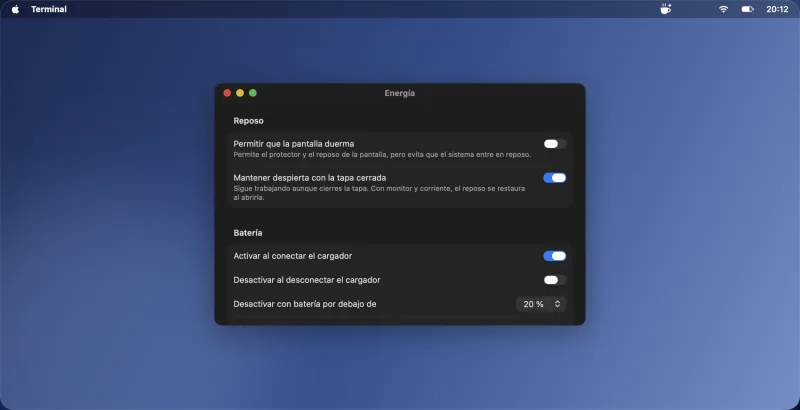
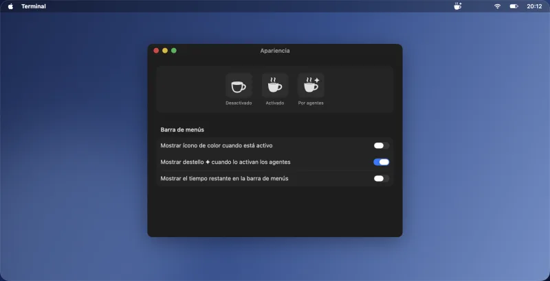
Precio
Sin suscripciones, sin anuncios y sin cuentas.
Gratis
Para siempre
Pago único
Un solo pago. Sin suscripción. Compartir en familia.
macOS 15 o posterior
Gratis en la Mac App Store, en 16 idiomas.
Muy pronto en la Mac App Store.